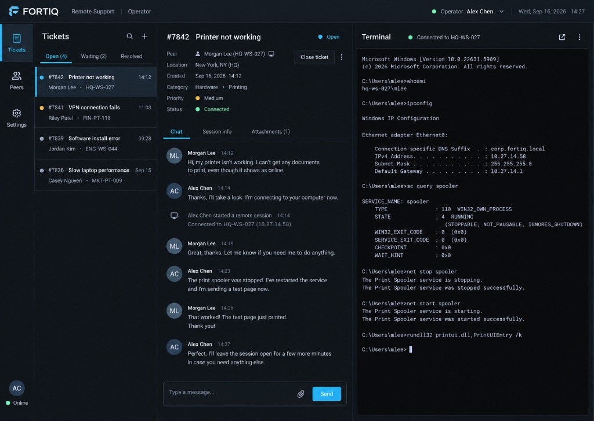

We are a specialized systems administration agency managing distributed Linux & Windows infrastructure. We eliminate third-party cloud risks by using our own peer-to-peer, end-to-end encrypted remote access software.

Direct high-tier systems engineering. No tier-1 helpdesk scripts, no third-party software licenses.
Full lifecycle operations for Linux and Windows Server environments, cloud VPS, hybrid clusters, and office workstations. Proactive health and service management.
Instant remote session establishment through NAT and strict corporate firewalls when outages happen. Direct recovery commands without reboot traps.
Kernel tuning, firewall configuration, automated patching, SSH/RDP replacement with peer-to-peer authenticated streams, and zero external attack surface.
Our operators can never connect uninvited. Every session requires an explicit cryptographically signed ticket opened directly on the customer's machine.
Automated offline and offsite snapshots, encrypted backup verification, failover rehearsal, and bare-metal service restoration within strict SLA windows.
Docker, Kubernetes, systemd daemonization, container orchestration, and continuous deployment pipeline monitoring tuned for peak performance.
Most IT providers rely on commercial tools like TeamViewer or AnyDesk, exposing your servers to central account hijacking and cloud breaches. We engineered our own solution in Rust.
Direct authenticated transport with libp2p. Low latency UDP/QUIC streams replace slow TCP tunnels, delivering instantaneous interactive terminal execution.
Works seamlessly behind CGNAT, enterprise NAT, and cellular modems. Automatic hole punching upgrades connections to direct paths whenever mathematically possible.
No usernames, passwords, or master tokens. Access authorization compares only the authenticated cryptographic PeerId derived from node keypairs.
Intelligent shell priority selection: PowerShell (pwsh.exe → powershell.exe → cmd.exe) on Windows; bash → sh on Linux. Clean process containment and graceful termination.
# Operator connecting to managed node via FORTIQ QUIC
> fortiq-service --dial /ip4/203.0.113.10/udp/4001/quic-v1/p2p/12D3KooW_TARGET --shell 12D3KooW_TARGET
[INFO] Authenticated connection established: 12D3KooW_TARGET (QUIC Direct)
[INFO] Remote Ticket verified: #FT-7842 [STATE: OPEN]
[INFO] Remote OS: Windows 11 Pro (x86_64) | Shell: PowerShell 7 (pwsh.exe)
FORTIQ Remote Session Active — Connected to OFFICE-PC-01
PS C:\Windows\system32> Get-Service | Where-Object Status -eq 'Running' | Select-Object -First 3
Status Name DisplayName
------ ---- -----------
Running fortiq-service FORTIQ Remote Administration Agent
Running LanmanServer Server
Running Spooler Print SpoolerReliability by design: our desktop GUI can be restarted or closed without dropping connection state or active jobs.
Operator 3-panel console or Managed user widget. Communicates exclusively via local IPC.
Runs as Windows Service (SYSTEM) or Linux systemd unit. Holds cryptographic identities, QUIC swarm, ticket state, and shell bridging.
Requires local OPEN ticket and exact operator PeerId matching before process spawning.
Traditional outsourced IT vs. FORTIQ Agency with custom peer-to-peer engineering.
| Security & Operational Feature | Traditional MSP / SaaS (TeamViewer, AnyDesk) | FORTIQ Managed Agency |
|---|---|---|
| Data Route | Routes through 3rd-party vendor cloud servers | Direct Peer-to-Peer QUIC (Zero middleman) |
| Authentication | Usernames, passwords, 2FA tokens on web portals | Ed25519 Cryptographic Keys & PeerIds |
| Access Consent | Unattended access passwords stored in SaaS database | Gated by client-opened cryptographic tickets |
| Process Execution | Heavy video-streaming GUI requiring high bandwidth | Sub-millisecond native terminal piping (ConPTY/PTY) |
| Vendor Lock-in | Monthly subscription traps and license audits | Included with your agency management agreement |
Install the lightweight agent on your endpoints to enable authorized support by our engineering team.
Windows 10, 11, Windows Server 2019/2022. Supports PowerShell 7, Windows PowerShell & cmd.
Debian, Ubuntu, RHEL, Rocky, AlmaLinux, Arch. Includes systemd unit for background daemon.
macOS Sonoma, Sequoia. Universal binary package with zsh/bash pipe bridging.
🔒 All binaries are cryptographically signed. Need custom enterprise deployment scripts or GPO packages? Contact our deployment team.
Whether you need emergency support, a dedicated 24/7 server administrator, or custom zero-trust remote deployment, our engineers are ready to assist.